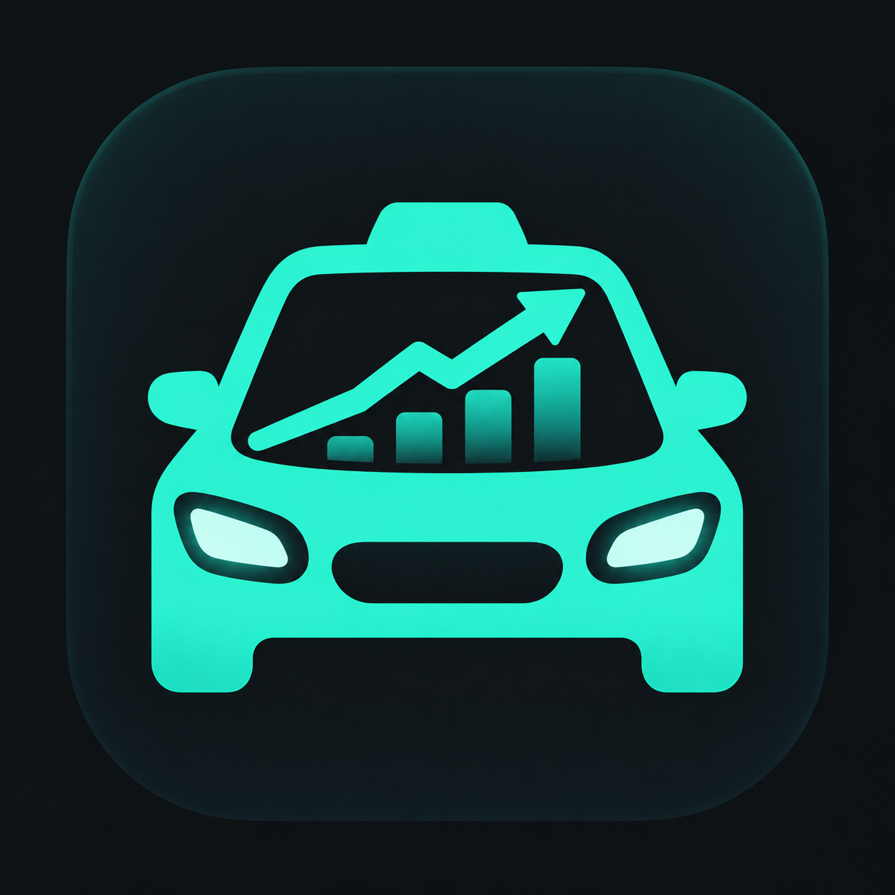
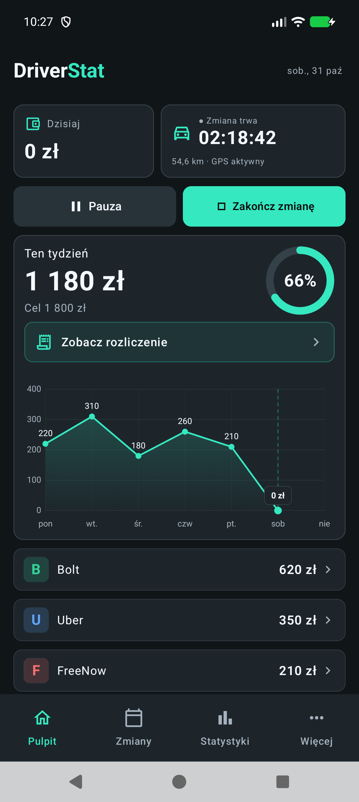
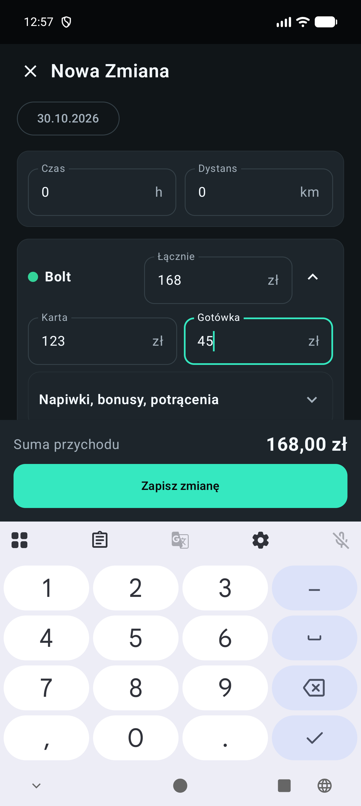
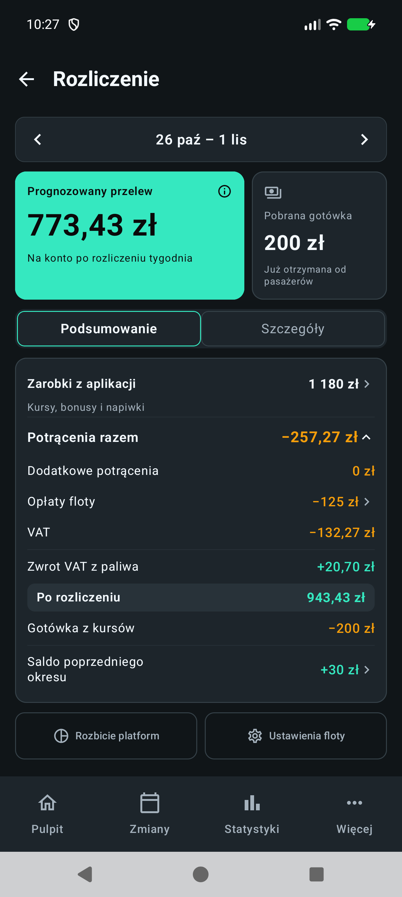
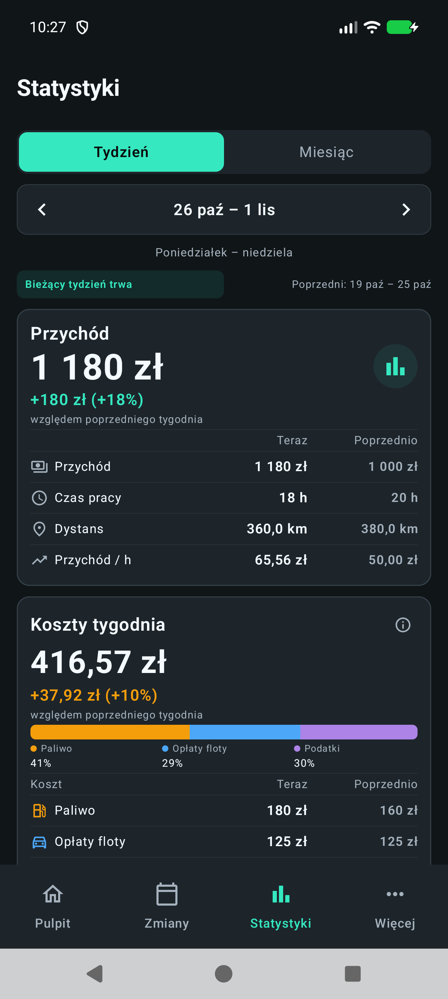

Zmiana od startu do końca
Start, pauza, wznowienie i koniec. Aplikacja mierzy czas oraz dystans z GPS, a zarobki dopisujesz po zakończeniu jazdy.

DriverStatDla kierowców · Android · W testach
Włącz pomiar czasu i dystansu GPS. Po jeździe wpisz zarobki z Bolt, Uber i FreeNow, a DriverStat zbierze przychody, koszty i prognozę rozliczenia w jednym miejscu.

Co potrafi
Start, pauza, wznowienie i koniec. Aplikacja mierzy czas oraz dystans z GPS, a zarobki dopisujesz po zakończeniu jazdy.
Wpisz kwotę łączną albo podziel ją na kartę i gotówkę. Dodaj bonusy, napiwki i dodatkowe potrącenia.
Przycisk na pulpicie prowadzi do prognozy przelewu. Rozwiń szczegóły zarobków, opłat floty, VAT, gotówki i salda poprzedniego okresu.
Porównuj tygodnie od poniedziałku do niedzieli lub całe miesiące. Sprawdzaj przychód, godziny, kilometry, paliwo i wynik po kosztach.
Ustaw opłaty stałe, procent od zarobków albo oba warianty. Zerowa opłata pozostaje zerowa. Dane auta, tankowania i serwis masz obok.
Bez zakładania konta. Zapisy są lokalne na telefonie, a kopię danych możesz wyeksportować do pliku i później przywrócić.
Aplikacja w praktyce



Rzeczywiste ekrany wersji testowej z przykładowymi danymi. Kliknij zrzut, aby zobaczyć go w pełnym rozmiarze.
DriverStat
Pomiar GPS służy do wyliczenia dystansu zmiany. DriverStat nie zapisuje historii trasy i nie pobiera automatycznie zarobków z aplikacji przewozowych. To Ty decydujesz, jakie kwoty wpisujesz.
FAQ
DriverStat działa na Androidzie i jest w testach. Nie ma jeszcze publicznego wydania w Google Play. Jeśli chcesz śledzić rozwój, napisz do nas.
Nie. Czas i dystans możesz mierzyć podczas zmiany, ale zarobki z każdej platformy wpisujesz samodzielnie.
Nie. Wynik zależy od wpisanych kwot i ustawień opłat. Prognoza pomaga sprawdzić tydzień, a oficjalne rozliczenie otrzymujesz od swojej floty.
Nie. Dane są zapisywane lokalnie. Przed zmianą telefonu lub odinstalowaniem aplikacji zrób kopię zapasową.
Wersja w testach
Dopracowujemy aplikację podczas codziennej pracy kierowcy. Masz pomysł lub chcesz zapytać o testy? Odezwij się.